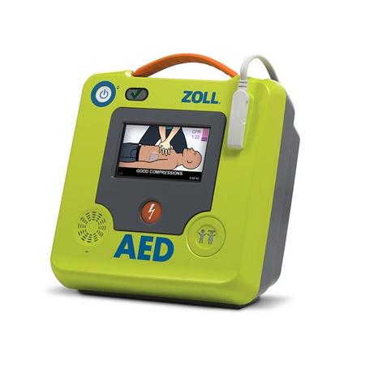

Overview
I envisage a future where networked drones control the airspace just out of earshot, making our lives effortlessly more efficient and easier, and saving our Earth from the deleterious effects of our century-long addiction to road travel and transport.
But all visions need a first step, a crack that opens the door to generational change and progress. Humans will always consider an option that saves human lives. This pandemic has shown us that in the face of fear, humans will tolerate almost any change. I propose that the first step be Resuscitation Drones, capable of responding to distress calls for humans requiring resuscitation much faster than currently possible, and providing earlier and better care in the first critical minutes of a life-threatening emergency.
The drones can be instantly responded using a ubiquitous smartphone app, and travel swiftly to the GPS coordinates of the emergency. Final descent and the clinical management of the emergency will be conducted by a medical flight controller. The drone will deliver a defibrillator and oxygen therapy equipment.
Motivation
I am passionate about reducing human reliance on road travel and transport. Humans are poorly equipped to operate motor vehicles (Webber 2019), driving is an inefficient use of our time (Vella 2016), road networks suffocate large portions of the surface of the earth (Watts 2019), and the greenhouse gases of fossil-fueled vehicles are poisoning our planet (Henriques-Gomez, 2018). I wish for my children to live in a world where all travel and transport is conducted using autonomous, self-driving vehicles fuelled by green power sources. A relatively simple step in breaking our reliance on road travel, and showcasing the benefits of artificial intelligence and alternative transport modes, is the idea of Resuscitation Drones.
Heart attack, or myocardial infarction, is when blood flow to the heart is blocked by a blood clot or buildup of arterial plaque (Heart Foundation). Heart attack claims the lives of 21 Australians per day (Australian Bureau of Statistics, 2018).
Cardiac arrest is an electrical problem where the heart stops beating. When this occurs, blood is not circulating and all cells in the body, including the brain and vital organs, are deprived of oxygen (Heart Foundation). A cardiac arrest is a medical emergency where the patient will be unconscious and not breathing. 70% of cardiac arrests are caused by heart attacks (Better Health Channel), which commonly occur in a person's home, but can occur anywhere in the community (Heart Foundation). Every minute that passes after a cardiac arrest decreases the chance of survival (NSW Health). Approximately 25,000 Australians suffer a cardiac arrest each year, with only around 5% of these surviving long term (Heart Foundation).
Cardiopulmonary resuscitation (CPR), defibrillation and oxygen therapy are first aid therapies shown to improve survival rates after cardiac arrest to over 60% (National Centre for Biotechnology Information). With each minute of delayed access to defibrillation, survival chances drop 7 to 10% (National Centre for Biotechnology Information). If defibrillation was to be made available by drones minutes earlier than currently possible, this survival rate will be further improved, including increased quality of life for survivors. A defibrillator requires no training to be used, as they are automatic and have clear voice prompts (Health Direct).
Currently, a defibrillator is used prior to ambulance arrival in only 3% of cardiac arrest cases (NSW Ambulance, 2019). Cardiac arrests are given a priority 1A designation by NSW Ambulance, allowing use of lights and sirens and multiple units dispatched to ensure minimum response time. The median response time by NSW Ambulance to these calls is 8 minutes in Sydney, and 9 minutes in Regional NSW (NSW Ambulance, 2018).
Drones can fly at speeds of up to 200km/h (Drone Rush), do not have to follow road networks, negotiate traffic, deal with corners or hills, and can travel "as the crow flies". My proposal would have a Resuscitation Drone based in every village or suburban centre, making most citizens within 5-10km of a drone. Including the time taken to ascend and descend I predict this would allow a defibrillator to arrive on scene at a cardiac arrest 2-4 minutes after an emergency signal has been sent via the app. Further time benefits are achieved in the speed of processing the incident location using the app, as opposed to traditional 000 methods that require conversing with multiple human operators, knowing your location, and communicating the information articulately during a time of great distress.
Description
A heavy-duty drone, or quadcopter, is based in a secure location in each village centre across Australia. This drone is equipped with an automatic external defibrillator (AED), B size medical oxygen cylinder (170L), various size oropharyngeal airways and various size resuscitation masks.
All smartphones come pre-installed with a Resuscitation Drone app, that is activated with TouchID or FaceID, confirms requirement for resuscitation, and activates the drone to respond to the GPS coordinates of the phone. The drone is assigned an altitude and flight path by artificial intelligence at the inception of its mission, allowing for clear air space between its base and the incident. At arrival at the incident it will automatically descend to within 30m, at which point a flight controller will take command of the drone, navigating it directly to the household front door or nearest outdoor location utilising cameras on the drone.
During the short response time the flight controller can be talking through the app to the bystander who activated the drone, advising on the progress of the drone, what to expect when it arrives, and how to prepare the patient. Concurrently, an ambulance is alerted and responded, ensuring that both professional medical staff arrive on scene as early as possible, but that defibrillation is available in the minutes prior to their arrival, ensuring the best possible outcome for the patient. The flight controller can observe the patient for the obvious presentation of cardiac arrest (Paramedic Study Guide) and direct the bystander on how to set up the defibrillator and oxygen equipment.
Early models will prioritise defibrillation, but as the technology develops, I envision robotic arms that can provide chest compressions. Chest compressions are very difficult to perform, must be the correct depth of chest and rhythm, and are physically exhausting as well as intimidating for a bystander. A mechanical and automatic chest compressor attached to the drone could provide perfect compressions without tiring, and in perfect synchronisation with the AED and oxygen equipment.
Current drones can easily carry 10kg of weight, with much greater capacity for specially designed drones (Drone Enthusiast). A defibrillator weighs approximately 2.5kg (AEDS) and an oxygen cylinder weighs approximately 2.5kg (Wiley). Oxygen delivery equipment is made of very lightweight plastic, so the combined weight of equipment carried will be under 10kg.

A heavy lift drone and a fast drone
Tools and Technologies
- Artificial intelligence for organising discrete flight paths, tracking drones and incident locations, avoiding collisions, and ensuring no coverage gaps by moving standy drones into position. The ability to select altitude and calculate flight path based on base location, destination and other aircraft/drones/obstacles on the route
- High definition digital maps, for accurate geopositioning (Infosys 2020)
- Fast drones capable of carrying approx 10kg of weight
- Small public spaces to build drone hangars that house docking stations, solar panels, batteries, computer hardware and communications equipment. Rooftops could be a good option
Software solutions, including open source (px4), for navigating autonomous drones exist and are constantly improving. Communication software exists for contacting and updating autonomous drones and communicating with bases and has demonstrated success in challenging communication settings since 2009 (Mavlink). High definition digital maps provide much greater usability for autonomous vehicles, and are currently in development, with expected completion by 2025 (Infosys 2020).
Skills Required
- Cross platform app development - must be available on iOS, Android and Windows phones
- User interface design - must be clean, simple, easy to use, and fast
- Programming languages for mobile app development such as C# and Javascript (Redbytes), as well as web development languages HTML and CSS (Toth, 2017)
- Programming languages such as C++, Swift and Python for autonomous drone navigation (Drone Code)
- Data skills - build databases to monitor and tweak drone network performance
- Cyber security to protect user data and drone network from being sabotaged - mistake or accident would be a public relations disaster that could kill the project
- Knowledge and understanding of the Internet of Things - software could be linked to other devices around the home, not just mobile phones, to increase accessibility
This project is highly feasible. Fast drones and heavy lift drones already exist. Engineers could easily build a drone to specifications. A small surcharge could be added to the purchase of any new phone to account for the cost.
The software skills and products required already exist independently, and require only an amalgamation and integration within this project. Drones can currently travel independently of a pilot when given parameters of a journey by a human operator(Koetsier, 2021). It is feasible to believe that these parameters can now come from the app and the known location of the nearest drone, bypassing the need for human input of these parameters. These drones navigate using sensors and are currently able to explore and map underground mines and search a smoke-logged building for occupants (Koetsier, 2021). These drones are not fast, used mostly for slow inspection purposes, but given that Resuscitation Drones will fly at a clear altitude, obstacle avoidance is not a requirement, so engineering for maximum speed will be the focus.
Outcome
If this project is successful there will be significantly improved outcomes for sufferers of sudden cardiac arrest, a medical emergency with a high mortality rate that can affect anyone, any time. I believe people would feel safer knowing they are protected by this technology. Paramedics will arrive on scene to a life that is being preserved and is savable, instead of the current situation where too much time has passed when the ambulance arrives and outcomes are poor.
This project will show industry, politicians and society of the benefits and feasibility of drone technology, and in artificial intelligence to deliver improvements to human life. I see further extension of this technology to other emergency services. Time is also critical in fire and police emergencies and the ability to swiftly or silently arrive at an incident and conduct some initial actions to avoid escalation can circumvent the incident from progressing into something more serious.
Beyond this scope I imagine that entrepreneurs could find numerous commercial applications for this technology, the speedy delivery of goods with minimum human labour and greenhouse emissions being the most obvious.